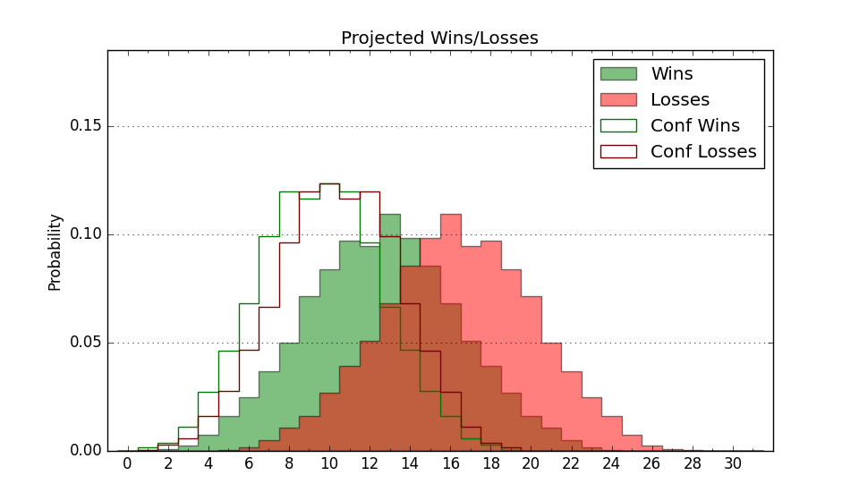

| Home | Game Probabilities | Conferences | Preseason Predictions | Odds Charts | NCAA Tournament |
| City: | Moon Township, Pennsylvania | |
| Conference: | Horizon (1st)
| |
| Record: | 0-0 (Conf) 0-2 (Overall) | |
| Ratings: | Comp.: -9.8 (271st) Net: 2.0 (165th) Off: 99.1 (209th) Def: 97.1 (129th) SoR: 0.0 (231st) |
| Remaining | ||||||
|---|---|---|---|---|---|---|
| Date | Opponent | Win Prob | Pred. | |||
| 11/17 | @ Wisconsin (30) | 3.3% | L 51-74 | |||
| 11/24 | Jacksonville (226) | 55.5% | W 62-60 | |||
| 11/26 | Fairleigh Dickinson (329) | 75.1% | W 77-69 | |||
| 11/29 | @ Northern Kentucky (196) | 21.9% | L 58-67 | |||
| 12/2 | Youngstown St. (225) | 55.3% | W 70-69 | |||
| 12/6 | @ Canisius (240) | 29.3% | L 64-70 | |||
| 12/11 | Delaware (172) | 42.9% | L 65-67 | |||
| 12/20 | @ St. Francis PA (359) | 66.3% | W 72-67 | |||
| 12/22 | Cornell (97) | 27.6% | L 70-77 | |||
| 12/29 | @ Milwaukee (248) | 31.1% | L 65-71 | |||
| 12/31 | @ Green Bay (354) | 58.2% | W 65-63 | |||
| 1/4 | IUPUI (358) | 84.9% | W 73-61 | |||
| 1/10 | Wright St. (173) | 43.4% | L 68-70 | |||
| 1/12 | Fort Wayne (282) | 67.1% | W 67-63 | |||
| 1/17 | Detroit (289) | 68.8% | W 74-68 | |||
| 1/20 | @ IUPUI (358) | 62.3% | W 69-65 | |||
| 1/28 | @ Cleveland St. (161) | 16.7% | L 61-72 | |||
| 2/1 | @ Oakland (234) | 28.3% | L 65-72 | |||
| 2/3 | @ Detroit (289) | 39.3% | L 69-72 | |||
| 2/8 | Green Bay (354) | 82.6% | W 69-59 | |||
| 2/10 | Milwaukee (248) | 60.6% | W 70-67 | |||
| 2/14 | @ Youngstown St. (225) | 26.6% | L 66-73 | |||
| 2/17 | @ Wright St. (173) | 18.4% | L 64-74 | |||
| 2/22 | Oakland (234) | 57.4% | W 70-67 | |||
| 2/25 | Cleveland St. (161) | 40.5% | L 65-68 | |||
| 2/28 | Northern Kentucky (196) | 48.9% | L 62-63 | |||
| 3/2 | @ Fort Wayne (282) | 37.5% | L 63-67 | |||
| Previous | Game Score | |||||
| Date | Opponent | Win Prob | Result | Off | Def | Net |
| 11/6 | @Xavier (54) | 5.3% | L 63-77 | 0.8 | 9.1 | 9.9 |
| 11/12 | @Towson (136) | 14.4% | L 62-66 | 16.4 | -5.6 | 10.8 |
| Stats & Trends | |||||
|---|---|---|---|---|---|
| Current | Day | Week | Month | Season | |
| Composite | -9.8 | -0.1 | +1.2 | +1.3 | +1.3 |
| Comp Rank | 271 | -1 | +18 | +18 | +18 |
| Net Efficiency | 2.0 | -0.5 | +9.5 | -- | -- |
| Net Rank | 165 | -1 | -15 | -- | -- |
| Off Efficiency | 99.1 | -7.3 | +5.1 | -- | -- |
| Off Rank | 209 | -70 | -47 | -- | -- |
| Def Efficiency | 97.1 | +6.8 | +4.4 | -- | -- |
| Def Rank | 129 | +82 | -2 | -- | -- |
| SoS Rank | 60 | +3 | -14 | -- | -- |
| Exp. Wins | 12.6 | +0.0 | +0.2 | +0.2 | +0.2 |
| Exp. Conf Wins | 9.6 | +0.0 | +0.2 | +0.3 | +0.3 |
| Conf Champ Prob | 4.6 | -0.3 | +0.6 | +0.8 | +0.8 |

| Advanced Stats | ||
|---|---|---|
| Stat | Value | Rank |
| Off Eff FG % | 0.409 | 317 |
| Off Ast Ratio | 0.106 | 287 |
| Off ORB% | 0.296 | 162 |
| Off TO Rate | 0.127 | 94 |
| Off FT Ratio | 0.344 | 179 |
| Def Eff FG % | 0.546 | 275 |
| Def Ast Ratio | 0.172 | 312 |
| Def ORB% | 0.423 | 330 |
| Def TO Rate | 0.195 | 69 |
| Def FT Ratio | 0.343 | 180 |